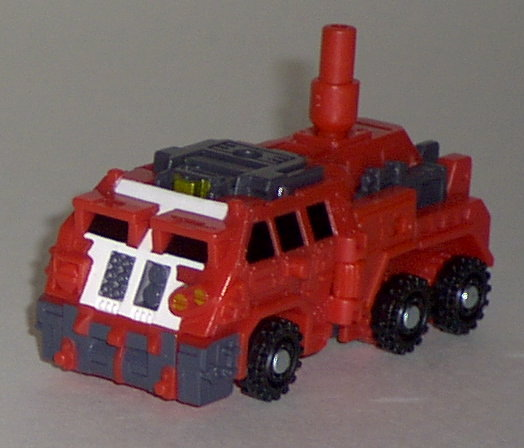
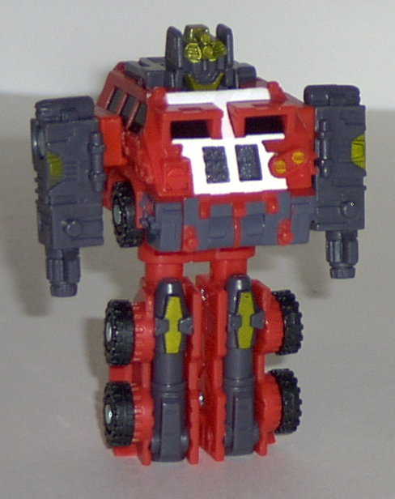
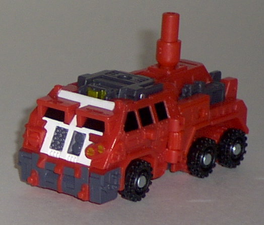
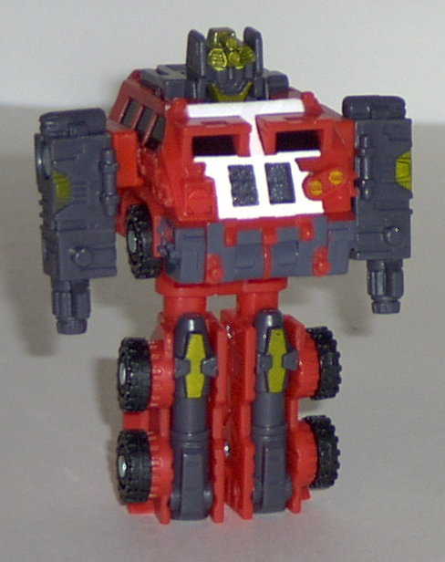
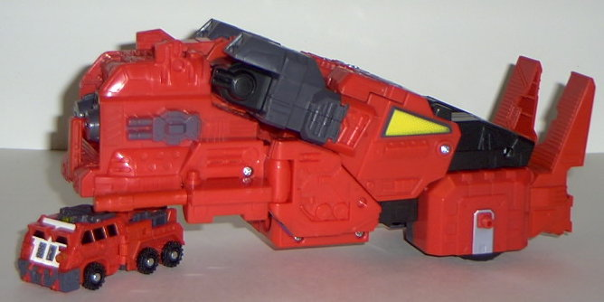
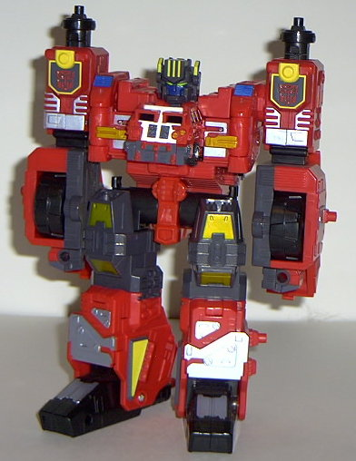
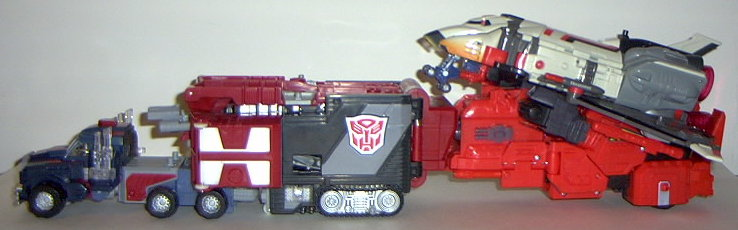
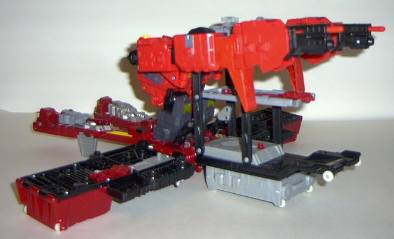
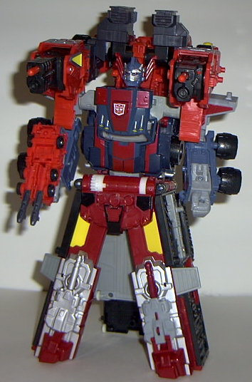

Rollout
Rollout
 
Allegiance : Minicon
Size : Mini-Con
Difficulty of Transformation : Very Easy
Color Scheme : Light red, dark gray, black, and some dull gold and white
Rating : 3.5
Rollout


Allegiance
: Minicon
Size
: Mini-Con
Difficulty of Transformation
: Very
Easy
Color Scheme
: Light red, dark gray,
black, and some dull gold and white
Rating
: 3.5
Rollout's vehicle mode
is a futuristic hauler. It's very apparent as soon as you see Rollout in
real life that he's EASILY the biggest Minicon there is. In fact, he's
actually a tad larger than a Spychanger. Woah. Anyways, this mode is pretty
good, if you don't count the big honkin' peg sticking out of the top. (It's
used for connecting to Overload in vehicle mode.) It's fairly distracting,
but at least there's no other extras in this mode. Excellent paint and
mold detailing, so no complaints there. Also fairly good proportions. The
Minicon symbol is emblazoned on the middle of the left side of this mode,
and the Minicon port is on the underside, about a centimeter or so from
the front bumper. Oh, and you can also turn Rollout upside down in this
mode and flip out some guns on his backside to form a handgun for larger
TFs. (See the picture of Overload combined with Optimus below for a picture
of him in this mode.)
Rollout's robot mode,
on the other hand, is... pretty bad. The proportions are horrible, for
one thing- his chest is enormous in comparison to the other body parts.
He also has small feet, so it's a bit hard to get him to stand up by himself.
His articulation is also horrible- he can only move at the shoulders, and
side-to-side at the knees. Little better than a Spychanger, that. His hands
are guns, and although that has a certain charm to it, I would have liked
hands molded on the insides of the arms, as having just ONE gun for an
arm doesn't look quite right. Oh, and did I mention that his legs pop off
if any force is applied to them at all? Ick. Lessee, positives... well,
his head has nice sculpt, I guess. And the paint and mold detailing is
still pretty good.
Rollout has an okay
vehicle mode (except for that peg), but his robot mode is one of the worst
of all the Minicons'. Certainly not the star of the set, let me tell you...
 Overload
Overload


Allegiance
: Autobot
Size
: Max-Con
Difficulty of Transformation
: Medium
Color Scheme
: Light red, dark gray,
black, silver, and some yellow, dull gold, blue, dark blue, white, and
light green
Powerlinx ports
: 6 (0 gimmicked)
Rating
: 8.1
Overload's vehicle mode I probably wouldn't have been able to identify if it wasn't for its advertised ability to carry Jetfire; it's a futuristic shuttle carrier. In all honestly, though, it looks a tiny hauler (Rollout) carrying a big bunch of...stuff... and some guns. Yes, Overload has quite a few guns in this mode (although none of the fire); twelve gun barrels, in fact. Hot dang. The mold detailing is awesome, and the paint detailing is nice on top, but a bit more could have been used on the bottom half of the trailer- too much red, there. In addition to holding Jetfire , he can also attach to the back of the trailer of Super Base / Powerlinx Optimus Prime (see below); he looks pretty cool in this convoy line, although he becomes deattached from Prime a bit easier than I'd like. As it is, Overload really wouldn't be that bad in this mode if he just looked like SOMETHING. I mean, even Demolishor looks like a kind of mobile missile launcher; Overload doesn't even have that much recognition.

Overload's robot mode
rocks the house. TONS of paint detailing and mold detailing everywhere,
and his just overall LOOK is probably in Armada's Robot Mode Hall of Fame.
Really stern-looking, and pumped and ready to beat up some Decepticons.
This is definitely what the toy was designed around, that's for sure. Plus,
he's very unique- his Minicon actually FORMS his head and chest. Funky.
(Plus, you can also do some crazy things like hang his head and chest on
his forearm- teeheehee. And if you press back on the head-chest part, Overload
will emit the classic transforming sound! Neat! Oh, and panels can open
up on his upper arms for some missile pack detailing. As if he didn't already
have ENOUGH firepower... Some minor nitpicks- there's a bit of a gap in
between his head and his chest, and rather large plastic pieces hang off
the back of his forearms. That's it, look-wise. Near-perfect in every way.
If only every Autobot looked this pumped... Anyways, Overload's main drawback
in this mode is that his articulation is pretty bad for a toy this big;
he can only move at the shoulders, side-to-side at the elbows, and at the
hips in two places. It definitely limits the poses he can do. Oddly enough,
Overload has no real Minicon port-activated gimmicks, although he does
have six static ports.


Overload can also form
a "gun mode" in which you can either put on Super Mode Optimus Prime's
shoulders or his base mode, with some slight modifications. It looks pretty
cool for a third mode, and it fits pretty well on the base mode, but it's
doing little more than just resting on Super Prime's shoulders when it's
attached to him. It's very, VERY easy to knock them down. Very poorly planned,
there. The guns themselves can fire missiles in this mode. Mine tend to
fire too easily, but it doesn't seem that this is a very widespread problem.
Overload has a so-so
gun mode and vehicle mode, but his robot mode just about makes up for them
both with its sheer awesomeness. Articulation's a bit lacking in that mode,
though. Recommended, although it you're only going to get one version,
I'd wait for the
Energon Ultra Magnus
repaint
of him.
Review by Beastbot